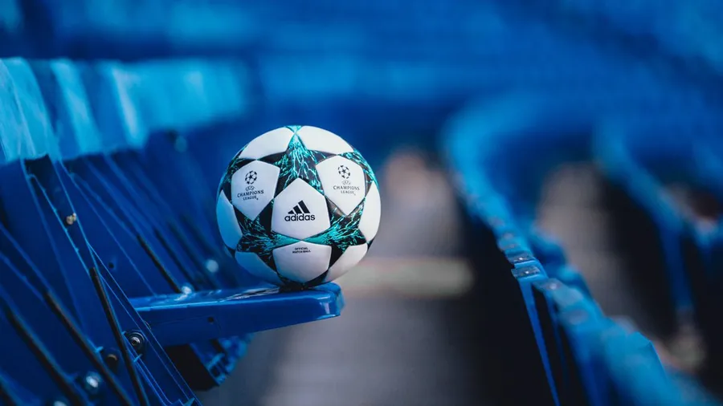
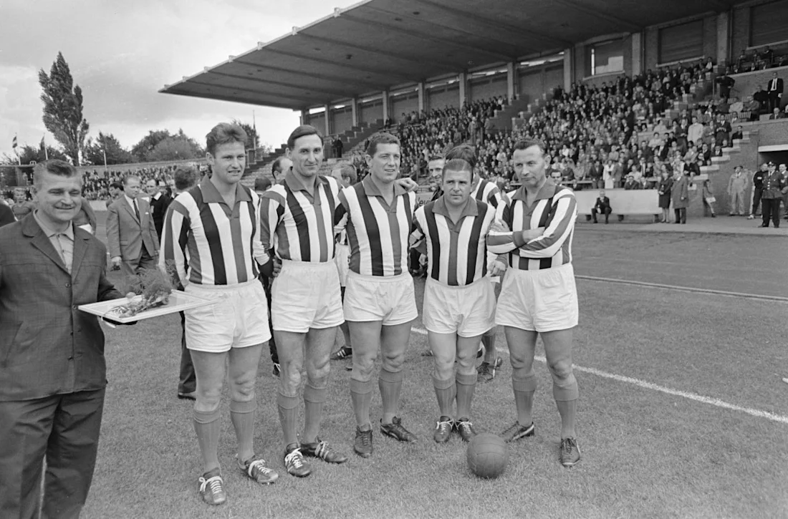

El Deporte Más Popular del Mundo
 Descubre su historiaHistoria del Fútbol
El fútbol tiene sus raíces en juegos de pelota practicados desde la antigüedad en diferentes culturas. En China, alrededor del siglo III a.C., se jugaba al Cuju, un juego en el que se pateaba una pelota de cuero hacia una pequeña red, considerado el primer antecedente del fútbol moderno. En Grecia y Roma existían juegos similares, como el Episkyros y el Harpastum, que consistían en equipos enfrentados intentando llevar una pelota a determinada zona del campo. Durante la Edad Media en Europa, especialmente en Inglaterra, surgieron los llamados “mob football”, partidos improvisados entre pueblos y aldeas, con cientos de jugadores y reglas casi inexistentes, siendo muy violentos y a menudo prohibidos por las autoridades. La formalización del fútbol comenzó en el siglo XIX en Inglaterra, cuando en 1863 se fundó la Football Association (FA), estableciendo un conjunto de reglas que diferenciaron el fútbol del rugby y marcaron el inicio del deporte organizado como lo conocemos hoy.
Historia del Fútbol por Continentes
Europa
El fútbol moderno tiene sus raíces en Europa, particularmente en Inglaterra. En 1863, se fundó la Football Association en Londres, estableciendo un conjunto de reglas que diferenciaron el fútbol del rugby. La creación de la Copa FA en 1871 y el primer partido internacional entre selecciones nacionales en 1873 entre Inglaterra y Escocia marcaron hitos importantes en la consolidación del deporte. La UEFA, fundada en 1954, organiza las principales competiciones europeas, como la Liga de Campeones de la UEFA, que ha elevado el nivel del fútbol en el continente.
América
El fútbol llegó a América en la segunda mitad del siglo XIX, traído por marineros e inmigrantes europeos. En América del Sur, países como Argentina, Brasil y Uruguay adoptaron rápidamente el deporte, y en 1901 se jugó el primer partido internacional entre selecciones sudamericanas, Argentina y Uruguay. La Copa América, fundada en 1916, es el torneo de selecciones más antiguo del continente. En América del Norte, el fútbol ha crecido en popularidad, con la Major League Soccer (MLS) en Estados Unidos y la Liga MX en México siendo las principales competiciones nacionales.

Asia
El fútbol en Asia tiene una historia marcada por influencias coloniales y el desarrollo de ligas nacionales. La Confederación Asiática de Fútbol (AFC) fue fundada en 1954 para promover el deporte en el continente. Países como Japón y Corea del Sur han sido pioneros en el desarrollo del fútbol profesional en Asia. La AFC organiza competiciones como la Liga de Campeones de la AFC, que ha elevado el nivel del fútbol en la región.

África
El fútbol llegó a África en el siglo XIX, introducido por colonizadores europeos. A pesar de las dificultades políticas y sociales, el deporte creció en popularidad. En 1957, se fundó la Confederación Africana de Fútbol (CAF), que organiza la Copa Africana de Naciones, el principal torneo de selecciones del continente. Países como Nigeria, Camerún y Egipto han sido exitosos en competiciones internacionales, y el fútbol africano continúa siendo una fuente de orgullo y unidad en la región.

Oceanía
El fútbol en Oceanía se desarrolló a finales del siglo XIX, traído por colonos británicos. En 1966, se fundó la Confederación de Fútbol de Oceanía (OFC) para promover el deporte en la región. Australia, Nueva Zelanda y Papúa Nueva Guinea son los países más destacados en el fútbol oceánico. Australia fue parte de la OFC hasta 2006, cuando se trasladó a la Confederación Asiática de Fútbol para mejorar su desarrollo futbolístico.

Mundiales
Aquí puedes consultar los campeonatos más importantes del fútbol mundial.
- MUNDIAL 1930 - URUGUAY
- MUNDIAL 1934 - ITALIA
- MUNDIAL 1938 - FRANCIA
- MUNDIAL 1950 - BRASIL
- MUNDIAL 1954 - SUIZA
- MUNDIAL 1958 - SUECIA
- MUNDIAL 1962 - CHILE
- MUNDIAL 1966 - INGLATERRA
- MUNDIAL 1970 - MÉXICO
- MUNDIAL 1974 - ALEMANIA OCCIDENTAL
- MUNDIAL 1978 - ARGENTINA
- MUNDIAL 1982 - ESPAÑA
- MUNDIAL 1986 - MÉXICO
- MUNDIAL 1990 - ITALIA
- MUNDIAL 1994 - ESTADOS UNIDOS
- MUNDIAL 1998 - FRANCIA
- MUNDIAL 2002 - COREA DEL SUR/JAPÓN
- MUNDIAL 2006 - ALEMANIA
- MUNDIAL 2010 - SUDÁFRICA
- MUNDIAL 2014 - BRASIL
- MUNDIAL 2018 - RUSIA
- MUNDIAL 2022 - CATAR